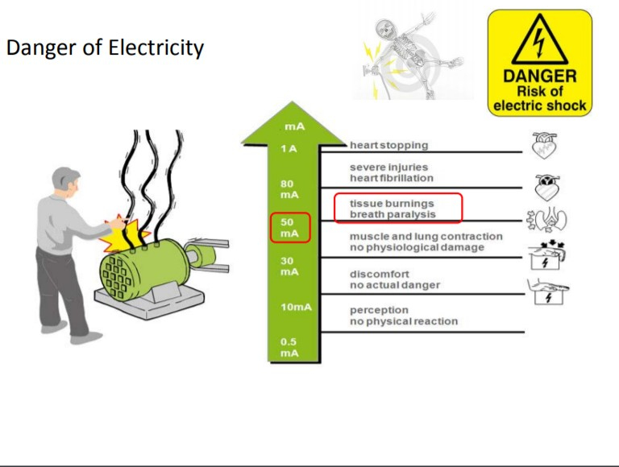
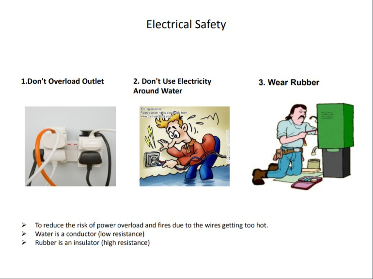
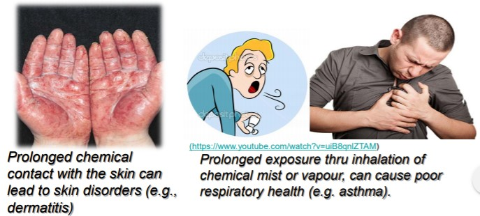

WEEK 1
FABLAB SAFETY AND PROJECT MANAGEMENT
Intro to Fab Lab
To summarize, IMPORTANT points are mentioned below:
Hazards
Mechanical Hazards
- Entanglement hazards
- Cutting hazards
- Impact hazards
- Shearing hazards
- Crushing hazards
- Draw-in hazards
- Frcition and abrasion hazards
Entanglement arise when loose clothing, hair or loose item got caught with the moving parts of a machine.
Cutting hazards are present in machines used to cut wood, metal or other materials at the point of operation. Machines with moving cutting elements are dangerous. They can cause severe injury (eg. deep cuts, amputations) due to its own momentum when they come into contact with a worker’s body
Impact hazards relate to objects that strike the human body, but do not penetrate it. The severity of an impact hazard depends on the speed, force and inertia of the moving machine part during operation or upon ejection from the machine .
Parts of machines that move past each other or stationary objects can cause a shear point resulting in a crushing or cutting action. In general, shearing hazards are present between two machine parts such as power press punch, shearing machine, etc..
It is caused when part of the body is caught between either two moving parts of machinery or a moving part and a stationary object.
Injuries can occur when a body part is drawn-in by inrunning nip points formed by two counter-rotating parts or between rotating and tangentially moving surfaces.
Friction burns and abrasions occurs when encountering rough surfaces moving at high speed e.g. sanding machine, grinding wheel etc. can cause abrasion injuries
Non-Mechanical Hazards
- Fall from Heightst hazards
- Noise hazards
- Electrical hazards
- Heat-related hazards
- Chemical hazards
- Fatigue
When required to work at heights, fall can lead to sprains or broken bones and in more serious cases, head injuries or even death.
- Noise is often generated during machine operations and work activities.
- Prolonged exposure to excessive noise can cause NID( Noise-Induced Deafness ).
- To prevent hearing loss, one should not be exposed to noise levels exceeding 85 dB (A) for 8 hours a day.
- May be exposed to electrical hazards, for example, during electrical installations or when machines or power tools are in use.
- Accidents involving contact with electricity can happen when an electrical machine failed, electric circuits are overloaded or shortcircuited, or when one comes into contact with a live wire.
- Contact with hot surfaces of machines can cause severe skin burns.
- Operations involving high temperatures, high humidity or strenuous physical activities cause heat-related illness (e.g. heat exhaustion or in severe cases, heat stroke).
Exposure to chemicals in the workplace can cause acute or long-term detrimental health effects.
- Fatigue is tiredness leading to reduced mental and physical performance that can endanger safety and health.
- can also lead to near-miss incidents, serious injuries and even fatal accidents due to reduced concentration and alertness.
- Long working hours without rest, intense and sustained physical exertion or mental effort, lack of adequate rest and sleep could be the causes of fatigue.
REST WELL TO PREPARE FOR LAB
Safety Assessment
First of all, Safety Assessment needs to be done at the lab for teacher to verify that u have completed and get the passing percentage of 80%. Else WILL NOT be allow to enter lab
Safety Assessment guideline:
- LoginE-service@SP(BlackBoard) find module EP1000
- Under Learning resoursec and look for Fablab Safety
- Read all documents provided to be familiar about lab rules
Emergency Procedures
Project Management
As it means, it helps to plan your tasks and projects which would lead to completion of work.
Assignment 1
| Time(approximate) | Task |
|---|---|
| 30~50min | Instalation - Fusion 360 & Text Editor |
| 45~60min | Go through the Lab Safety Slides and Handbook, familarise with Rules in Lab |
| 10~15min | Research about neccesary tool needed in tool-kit |
| 10min | Create a github account |
Text Editor
| Web Editor | |
|---|---|
 |
Atom |
| Brackets | |
| Notepad++ | |
 |
Sublimetext |
Autodesk Fusion 360
This is a Computer Aided design(CAD) tool for 3D modelling(digitally design your project)